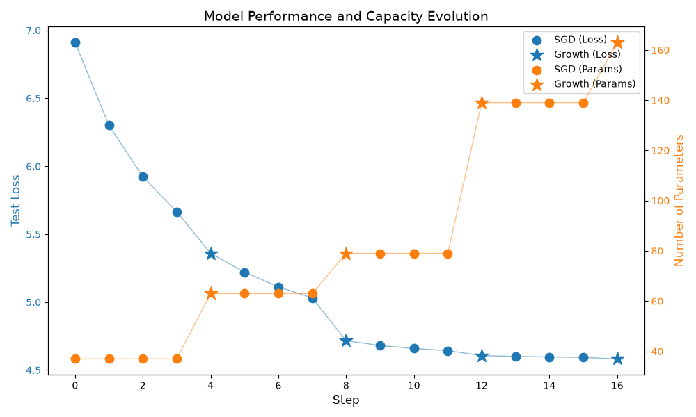

Note
Go to the end to download the full example code.
GrowingContainer tutorial#
A step-by-step guide to neural network growing using the GroMo (Growing Modules) library.
What is GroMo?#
GroMo is a library that enables progressive neural network growth during training. Instead of defining a fixed architecture upfront, you start with a small network and dynamically add neurons to layers based on gradient information. This approach can lead to Informed growth: New neurons are added in directions that most reduce the loss.
Tutorial Overview#
In this notebook, we will:
Set up the environment
Create a small
GrowingMLPmodelDefine training, evaluation, and growth functions
Iteratively train and grow the network
This process is presented for the GrowingMLP structure but it can be
generalized to other structures like a ResNet, a MLP Mixer, etc.
Let’s get started!
Step 1: Environment Setup and Imports#
First, we import the necessary libraries:
import matplotlib.pyplot as plt
import torch
import torch.utils.data
from helpers.synthetic_data import MultiSinDataloader
from gromo.containers.growing_mlp import GrowingMLP
from gromo.utils.training_utils import (
compute_statistics,
evaluate_model,
gradient_descent,
)
device = torch.device("cuda" if torch.cuda.is_available() else "cpu")
print(f"Using device: {device}")
Using device: cpu
Step 2: Define the data loaders#
We use a custom dataloader with synthetic data for training and testing.
The input \(x \sim \mathcal{N}(0_k, 1_k)\) and the target is defined as:
in_features = 10
out_features = 3
train_data_loader = MultiSinDataloader(
nb_sample=10,
batch_size=1_000,
in_features=in_features,
out_features=out_features,
seed=0,
device=device,
)
test_data_loader = MultiSinDataloader(
nb_sample=1,
batch_size=1_000,
in_features=in_features,
out_features=out_features,
seed=1,
device=device,
)
Defining the GrowingMLP Architecture#
Before we use GrowingMLP, let’s look at its
implementation
to understand how it works.
Key Components#
LinearGrowingModule: A special linear layer that supports dynamic growth. Each layer can have neurons added to it during training.
GrowingContainer: The base class that provides the growth infrastructure
Important Methods#
Method |
Description |
|---|---|
|
Define the layers, carefully link them together |
|
Standard forward pass using current weights |
|
Forward pass that includes proposed new neurons |
|
Select which layer(s) to grow |
Step 3: Helper Functions#
We need three key operations to work with our growing network:
Training: Standard gradient descent — we use
gradient_descentfromgromo.utils.training_utilsEvaluation: Compute loss on a dataset — we use
evaluate_modelfromgromo.utils.training_utils, which also supports extended evaluation (previewing the effect of proposed new neurons viause_extended_model=True)Growth: The core GroMo logic — we use
compute_statisticsto accumulate gradient information, then perform a line search locally
Only the growth function needs to be defined here, as it combines statistics accumulation with a line search for the best scaling factor.
Growth Function#
This is the core of GroMo - the function that intelligently grows the network. Here’s what happens step by step:
set_growing_layers(layer_to_grow): Specify which layer(s) will be grown
compute_statistics(): Initialize internal buffers and process the entire dataset, accumulating information about optimal growth directions
compute_optimal_updates(): Solve for the optimal new neuron weights based on accumulated statistics
dummy_select_update(): Here it’s trivial as we selected the layer before computing the statistics but we could have done it the other way around and select the layer to grow by looking at the different proposed updates
Line search: Try different scaling factors to find the best magnitude for the new neurons
apply_change(): Permanently add the new neurons to the network
The line search is crucial: it determines how much to “trust” the computed optimal neurons. A scaling factor of 0 means no growth, while larger values add stronger contributions from new neurons.
def grow(
model: GrowingMLP,
device: torch.device,
train_loader: torch.utils.data.DataLoader,
layer_to_grow: int,
) -> None:
"""
Grow the specified layer of the model by adding new neurons.
Parameters
----------
model : GrowingMLP
The neural network model to grow.
device : torch.device
The device (CPU or CUDA) to run computations on.
train_loader : torch.utils.data.DataLoader
DataLoader providing batches of (input, target) pairs.
layer_to_grow : int
Index of the layer to grow (1-indexed over growable layers,
i.e. excludes the input layer and follows the ordering of _growable_layers).
Notes
-----
The growth procedure:
1. Accumulate gradient statistics over the training set
2. Compute optimal weights for new neurons
3. Find the best scaling factor via line search
4. Apply the growth to the model
"""
# /!/ We use the reduction="sum" as the averaging is already
# done in the GrowingMLP methods
criterion_sum = torch.nn.MSELoss(reduction="sum")
criterion_mean = torch.nn.MSELoss(reduction="mean")
model.set_growing_layers(index=layer_to_grow)
compute_statistics(
model,
train_loader,
loss_function=criterion_sum,
device=device,
)
model.compute_optimal_updates()
model.reset_computation()
model.dummy_select_update()
# Line search to find the best scaling factor
best_loss = float("inf")
best_value = 0.0
for value in [0.0, 0.1, 0.5, 1.0]:
model.set_scaling_factor(value)
loss, _ = evaluate_model(
model,
train_loader,
criterion_mean,
use_extended_model=True,
device=device,
)
print(f"Scaling factor: {value}, Loss: {loss:.4f}")
if loss < best_loss:
best_loss = loss
best_value = value
print(f"Best scaling factor: {best_value}, loss: {best_loss:.4f}")
model.set_scaling_factor(best_value)
model.apply_change()
Step 4: Create the Initial Model#
Now we create our GrowingMLP model with:
Input size: 10 (features)
Output size: 3 (targets)
Hidden size: 2 neurons (intentionally small - we’ll grow it!)
Number of hidden layers: 2
Starting with such a small network demonstrates how GroMo can grow the architecture from minimal capacity.
number_hidden_layers = 2
torch.manual_seed(0)
model = GrowingMLP(
in_features=in_features,
out_features=out_features,
hidden_size=2,
number_hidden_layers=number_hidden_layers,
device=device,
)
model
LinearGrowingModule(LinearGrowingModule(Layer 0))(in_features=10, out_features=2, use_bias=True)
LinearGrowingModule(LinearGrowingModule(Layer 1))(in_features=2, out_features=2, use_bias=True)
LinearGrowingModule(LinearGrowingModule(Layer 2))(in_features=2, out_features=3, use_bias=True)
Step 5: Training Loop with Growth#
Now comes the exciting part! We run an iterative process that alternates between:
Training: Standard gradient descent to improve the current network
Growing: Adding new neurons to increase capacity
What to observe:
The model starts very small (only 4 hidden neurons, 2 per hidden layer)
After each growth step, the model architecture changes (more neurons are added)
Test loss should decrease as the network gains capacity
The line search output shows how different scaling factors affect performance
Watch how the network progressively grows and improves!
growth_steps = 4
intermediate_epochs = 3
# Data collection for plotting
history = {
"step": [],
"test_loss": [],
"num_params": [],
"step_type": [], # "SGD" or "GRO"
}
def count_parameters(model: torch.nn.Module) -> int:
"""Count the number of trainable parameters in the model."""
return sum(p.numel() for p in model.parameters() if p.requires_grad)
print("Original model:")
print(model)
criterion = torch.nn.MSELoss()
test_loss, _ = evaluate_model(model, test_data_loader, criterion, device=device)
last_test_loss = test_loss
print(f"[N/A] Step {0}, Test Loss: {test_loss:.4f}")
# Record initial state
history["step"].append(0)
history["test_loss"].append(test_loss)
history["num_params"].append(count_parameters(model))
history["step_type"].append("SGD")
for step in range(growth_steps):
optimizer = torch.optim.SGD(model.parameters(), lr=0.01)
for epoch in range(1, intermediate_epochs + 1):
gradient_descent(
model,
train_data_loader,
optimizer,
scheduler=None,
loss_function=criterion,
device=device,
)
test_loss, _ = evaluate_model(
model,
test_data_loader,
criterion,
device=device,
)
current_step = epoch + step * (intermediate_epochs + 1)
print(
f"[SGD] Step {current_step}, "
f"Test Loss: {test_loss:.4f} ({test_loss - last_test_loss:.4f})"
)
last_test_loss = test_loss
# Record SGD step
history["step"].append(current_step)
history["test_loss"].append(test_loss)
history["num_params"].append(count_parameters(model))
history["step_type"].append("SGD")
layer_to_grow: int = step % max(1, number_hidden_layers)
print(f"Growing layer {layer_to_grow}")
grow(model, device, train_data_loader, layer_to_grow=layer_to_grow)
print("Model after growing:")
print(model)
test_loss, _ = evaluate_model(model, test_data_loader, criterion, device=device)
current_step = (step + 1) * (intermediate_epochs + 1)
print(
f"[GRO], Step {current_step}, "
f"Test Loss: {test_loss:.4f} ({test_loss - last_test_loss:.4f})"
)
last_test_loss = test_loss
# Record growth step (update the last entry to mark it as GRO)
history["step"].append(current_step)
history["test_loss"].append(test_loss)
history["num_params"].append(count_parameters(model))
history["step_type"].append("GRO")
Original model:
LinearGrowingModule(LinearGrowingModule(Layer 0))(in_features=10, out_features=2, use_bias=True)
LinearGrowingModule(LinearGrowingModule(Layer 1))(in_features=2, out_features=2, use_bias=True)
LinearGrowingModule(LinearGrowingModule(Layer 2))(in_features=2, out_features=3, use_bias=True)
[N/A] Step 0, Test Loss: 6.9118
[SGD] Step 1, Test Loss: 6.3001 (-0.6117)
[SGD] Step 2, Test Loss: 5.9221 (-0.3780)
[SGD] Step 3, Test Loss: 5.6654 (-0.2567)
Growing layer 0
Scaling factor: 0.0, Loss: 5.5520
Scaling factor: 0.1, Loss: 5.5478
Scaling factor: 0.5, Loss: 5.4533
Scaling factor: 1.0, Loss: 5.2383
Best scaling factor: 1.0, loss: 5.2383
Model after growing:
LinearGrowingModule(LinearGrowingModule(Layer 0))(in_features=10, out_features=4, use_bias=True)
LinearGrowingModule(LinearGrowingModule(Layer 1))(in_features=4, out_features=2, use_bias=True)
LinearGrowingModule(LinearGrowingModule(Layer 2))(in_features=2, out_features=3, use_bias=True)
[GRO], Step 4, Test Loss: 5.3587 (-0.3067)
[SGD] Step 5, Test Loss: 5.2204 (-0.1383)
[SGD] Step 6, Test Loss: 5.1136 (-0.1068)
[SGD] Step 7, Test Loss: 5.0304 (-0.0832)
Growing layer 1
Scaling factor: 0.0, Loss: 4.9136
Scaling factor: 0.1, Loss: 4.8978
Scaling factor: 0.5, Loss: 4.6110
Scaling factor: 1.0, Loss: 4.8713
Best scaling factor: 0.5, loss: 4.6110
Model after growing:
LinearGrowingModule(LinearGrowingModule(Layer 0))(in_features=10, out_features=4, use_bias=True)
LinearGrowingModule(LinearGrowingModule(Layer 1))(in_features=4, out_features=4, use_bias=True)
LinearGrowingModule(LinearGrowingModule(Layer 2))(in_features=4, out_features=3, use_bias=True)
[GRO], Step 8, Test Loss: 4.7163 (-0.3141)
[SGD] Step 9, Test Loss: 4.6807 (-0.0356)
[SGD] Step 10, Test Loss: 4.6587 (-0.0220)
[SGD] Step 11, Test Loss: 4.6431 (-0.0156)
Growing layer 0
Scaling factor: 0.0, Loss: 4.5436
Scaling factor: 0.1, Loss: 4.5415
Scaling factor: 0.5, Loss: 4.5138
Scaling factor: 1.0, Loss: 4.5861
Best scaling factor: 0.5, loss: 4.5138
Model after growing:
LinearGrowingModule(LinearGrowingModule(Layer 0))(in_features=10, out_features=8, use_bias=True)
LinearGrowingModule(LinearGrowingModule(Layer 1))(in_features=8, out_features=4, use_bias=True)
LinearGrowingModule(LinearGrowingModule(Layer 2))(in_features=4, out_features=3, use_bias=True)
[GRO], Step 12, Test Loss: 4.6069 (-0.0362)
[SGD] Step 13, Test Loss: 4.6010 (-0.0059)
[SGD] Step 14, Test Loss: 4.5966 (-0.0044)
[SGD] Step 15, Test Loss: 4.5935 (-0.0031)
Growing layer 1
Scaling factor: 0.0, Loss: 4.4958
Scaling factor: 0.1, Loss: 4.4947
Scaling factor: 0.5, Loss: 4.4750
Scaling factor: 1.0, Loss: 4.4946
Best scaling factor: 0.5, loss: 4.4750
Model after growing:
LinearGrowingModule(LinearGrowingModule(Layer 0))(in_features=10, out_features=8, use_bias=True)
LinearGrowingModule(LinearGrowingModule(Layer 1))(in_features=8, out_features=6, use_bias=True)
LinearGrowingModule(LinearGrowingModule(Layer 2))(in_features=6, out_features=3, use_bias=True)
[GRO], Step 16, Test Loss: 4.5823 (-0.0112)
Step 6: Visualize Training Progress#
Let’s plot the evolution of the model’s performance:
Test loss (left y-axis): Shows how well the model generalizes
Number of parameters (right y-axis): Shows the model capacity growth
Markers: Circles (○) for SGD steps, stars (★) for growth steps
fig, ax1 = plt.subplots(figsize=(10, 6))
# Separate data by step type
sgd_indices = [i for i, t in enumerate(history["step_type"]) if t == "SGD"]
gro_indices = [i for i, t in enumerate(history["step_type"]) if t == "GRO"]
# Left y-axis: Test Loss
ax1.set_xlabel("Step", fontsize=12)
ax1.set_ylabel("Test Loss", color="tab:blue", fontsize=12)
ax1.plot(history["step"], history["test_loss"], color="tab:blue", alpha=0.5, linewidth=1)
ax1.scatter(
[history["step"][i] for i in sgd_indices],
[history["test_loss"][i] for i in sgd_indices],
color="tab:blue",
marker="o",
s=80,
label="SGD (Loss)",
zorder=3,
)
ax1.scatter(
[history["step"][i] for i in gro_indices],
[history["test_loss"][i] for i in gro_indices],
color="tab:blue",
marker="*",
s=200,
label="Growth (Loss)",
zorder=3,
)
ax1.tick_params(axis="y", labelcolor="tab:blue")
# Right y-axis: Number of Parameters
ax2 = ax1.twinx()
ax2.set_ylabel("Number of Parameters", color="tab:orange", fontsize=12)
ax2.plot(
history["step"], history["num_params"], color="tab:orange", alpha=0.5, linewidth=1
)
ax2.scatter(
[history["step"][i] for i in sgd_indices],
[history["num_params"][i] for i in sgd_indices],
color="tab:orange",
marker="o",
s=80,
label="SGD (Params)",
zorder=3,
)
ax2.scatter(
[history["step"][i] for i in gro_indices],
[history["num_params"][i] for i in gro_indices],
color="tab:orange",
marker="*",
s=200,
label="Growth (Params)",
zorder=3,
)
ax2.tick_params(axis="y", labelcolor="tab:orange")
# Combined legend
lines1, labels1 = ax1.get_legend_handles_labels()
lines2, labels2 = ax2.get_legend_handles_labels()
ax1.legend(lines1 + lines2, labels1 + labels2, loc="upper right")
plt.title("Model Performance and Capacity Evolution", fontsize=14)
fig.tight_layout()
plt.show()

Total running time of the script: (0 minutes 1.921 seconds)